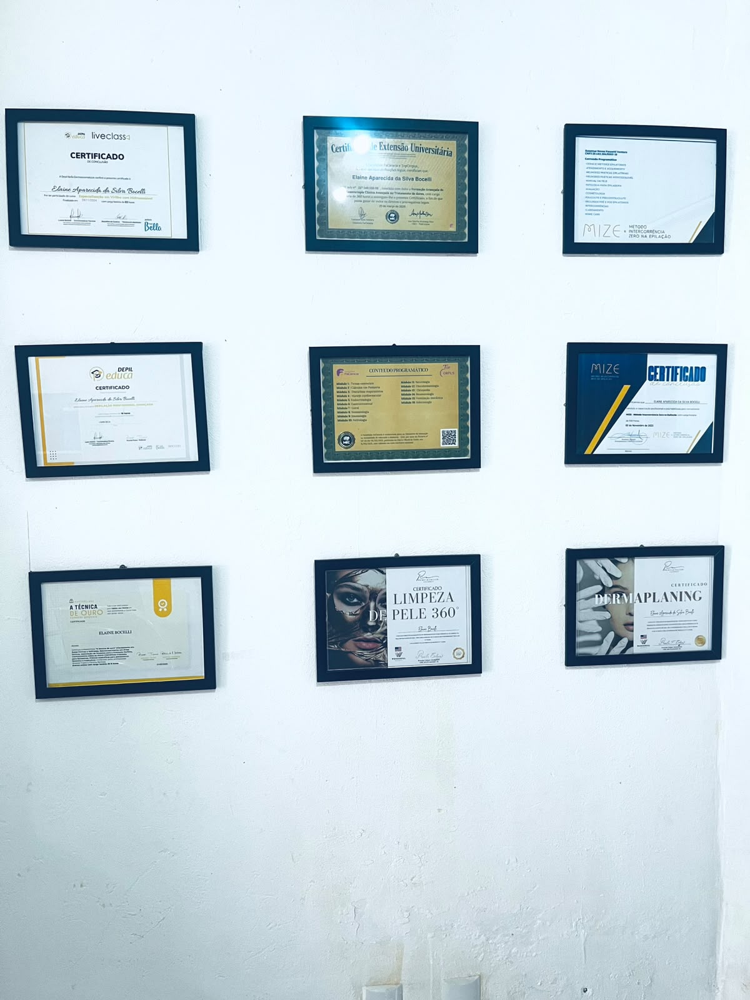

Protocolo de Cuidados com a Pele

Nossos procedimentos seguem protocolos rigorosos de preparação e finalização da pele. Antes da depilação, realizamos a higienização adequada para evitar foliculite e irritações. Ao final, aplicamos loções calmantes e hidratantes que recuperam a barreira natural da pele, garantindo maciez imediata e resultados mais duradouros.